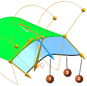
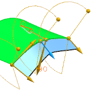
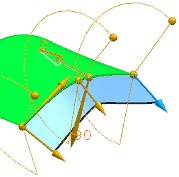
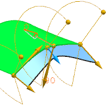
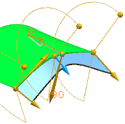

过渡选项
过渡 — 使用决定插补类型的角度或长度手柄，来创建后续基本曲线段的偏置曲线。将从基线的片段及其相应的偏置曲线中创建直纹曲面。
|
提示 |
您可以右击角度和长度手柄，以快速访问如下所示的过渡选项。 |
|
过渡选项 |
||
|
该表格列出了过渡设置应用在(3)选定手柄(1)与下一个手柄(2)之间在选定边的方向上。 这些插图编号适用于这个表格中的所有图像。 |
 |
|
|
恒定 |
 |
为中点(1)和端点手柄(2)之间的分段创建过渡，保持固定的开始值。 |
|
线性 |
 |
为中点(1)和端点手柄(2)之间的分段创建过渡，它们从(1)处的起始值线性变化到(2)处的终点值。 |
|
最小/最大 |
 |
为中间(1)和端点手柄(2)之间的分段创建三次或 S 形过渡。它们从起始点(1)到端点(2)的值变化是非线性的。分段的端切线与其邻近的分段对齐。 |
|
圆角 |
 |
为中间(1)和端点手柄(2)之间的分段创建过渡。这些片段在相邻曲线分段之间创建一个平滑的桥接曲线。 |
|
对所有应用过渡 |
(仅对起始手柄可选)将第一个分段的过渡应用到所有的分段。 |
|
|
设置原点参考 |
(仅对角度手柄可选)将角度的方位重置到0（最初的参考点）。 |
|